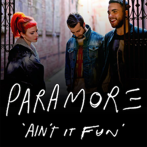
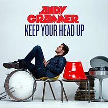

♫ Sunflower Post Malone, Swae Lee ♫
[Intro: Swae Lee]
Ayy, ayy, ayy, ayy (Ooh)
Ooh, ooh, ooh, ooh (Ooh)
Ayy, ayy
Ooh, ooh, ooh, ooh
[Verse 1: Swae Lee]
Needless to say, I keep in check
She was a bad-bad, nevertheless (Yeah)
Callin' it quits now, baby, I'm a wreck (Wreck)
Crash at my place, baby, you're a wreck (Wreck)
Needless to say, I'm keeping in check
She was a bad-bad, nevertheless
Callin' it quits now, baby, I'm a wreck
Crash at my place, baby, you're a wreck
Thinkin' in a bad way, losin' your grip
Screamin' at my face, baby, don't trip
Someone took a big L, don't know how that felt
Lookin' at you sideways, party on tilt
Ooh-ooh, some things you just can't refuse
She wanna ride me like a cruise and I'm not tryna lose
[Chorus: Swae Lee]
Then you're left in the dust, unless I stuck by ya
You're a sunflower, I think your love would be too much
Or you'll be left in the dust, unless I stuck by ya
You're the sunflower, you're the sunflower
[Verse 2: Post Malone]
Every time I'm leavin' on ya (Ooh)
You don't make it easy, no (No, no)
Wish I could be there for ya (Ooh)
Give me a reason to, oh (Oh)
Every time I'm walkin' out (Oh)
I can hear you tellin' me to turn around (Oh, oh)
Fightin' for my trust and you won't back down (No)
Even if we gotta risk it all right now, oh (Now)
I know you're scared of the unknown (Known)
You don't wanna be alone (Alone)
I know I always come and go (And go)
But it's out of my control
[Chorus: Post Malone]
And you'll be left in the dust, unless I stuck by ya
You're the sunflower, I think your love would be too much
Or you'll be left in the dust, unless I stuck by ya
You're the sunflower, you're the sunflower (Yeah)
Source: Genius
- 

- Click on the image to watch the music video on YouTube.
♫ Ain't It Fun Paramore ♫
[Verse 1]
I don't mind
Letting you down easy, but just give it time
If it don't hurt now just wait, just wait a while
You're not the big fish in the pond no more
You are what they're feeding on
[Pre-Chorus 1]
So what are you gonna do
When the world don't orbit around you
So what are you gonna do
When the world don't orbit around you
[Chorus]
Ain't it fun
Living in the real world
Ain't it good
Being all alone
[Verse 2]
Where you're from
You might be the one who's running things
Well you could ring anybody's bell and get what you want
You see it's easy to ignore trouble
When you're living in a bubble
[Pre-Chorus 2]
So what are you gonna do
When the world don't orbit around you
So what are you gonna do
When nobody wants to fool with you
[Chorus]
Ain't it fun
Living in the real world
Ain't it good
Being all alone
[Extended Chorus]
Ain't it good to be on your own
Ain't it fun, you can't count on no one
Ain't it good to be on your own
Ain't it fun, you can't count on no one
Ain't it fun
Living in the real world
[Bridge]
Don't go crying to your mama
'Cause you're on your own in the real world
Don't go crying to your mama
'Cause you're on your own in the real world
Don't go crying to your mama
'Cause you're on your own in the real world
Don't go crying to your mama
'Cause you're on your own in the real world
Ain't it fun, ain't it fun
Baby now you're one of us
Ain't it fun, ain't it fun, ain't it fun
[Chorus]
Ain't it fun
Living in the real world
Ain't it good, ain't it good
Being all alone
Ain't it fun
Living in the real world
('Cause the world don't orbit around you)
Ain't it good, ain't it good
Being all alone
[Outro]
Don't go crying to your mama (To your mother)
'Cause you're on your own in the real world (Don't go crying)
Don't go crying to your mama (To your mama)
'Cause you're on your own in the real world
Don't go crying to your mama
'Cause you're on your own in the real world (This is the real world)
Don't go crying to your mama
'Cause you're on your own in the real world
This is the real world
This is the real world
Don't go crying to your mama
'Cause you're on your own in the real world
Don't go crying to your mama
'Cause you're on your own in the real world
Don't go crying to your mama
'Cause you're on your own in the real world
Don't go crying to your mama
'Cause you're on your own in the real world
Don't go crying
Don't go crying (You're on your own)
Don't go crying...
Source: Genius
- 

- Click on the image to watch the music video on YouTube.
♫ Keep Your Head Up Andy Grammar ♫
[Intro]
Whoa oh oh oh
Eh eh eh eh
Whoa oh oh oh, oh oh
[Verse 1]
I've been waiting on a sunset, bills on my mindset
I can't deny they're getting high
Higher than my income, income's bread crumbs
I've been trying to survive
The glow that the sun gets right around sunset
Helps me to realize
This is just a journey, drop your worries
You are gonna turn out fine
[Pre-Chorus]
Oh, you turn out fine
Fine, oh, you turn out fine
[Chorus]
But you gotta keep your head up, oh oh
And you can let your hair down, eh eh
You gotta keep your head up, oh oh
And you can let your hair down, eh eh
I know it's hard, know it's hard
To remember sometimes
But you gotta keep your head up, oh oh
And you can let your hair down, eh eh eh eh eh
[Verse 2]
I got my hands in my pockets, kicking these rocks
It's kinda hard to watch this life go by
I'm buying into skeptics
Skeptics mess with the confidence in my eyes
I'm seeing all the angles, thoughts get tangled
I start to compromise my life and my purpose
Is it all worth it?
Am I gonna turn out fine?
[Pre-Chorus]
Oh, you turn out fine
Fine, oh, you turn out fine
[Chorus]
But you gotta keep your head up, oh oh
And you can let your hair down, eh eh
You gotta keep your head up, oh oh
And you can let your hair down, eh eh
I know it's hard, know it's hard
To remember sometimes
But you gotta keep your head up, oh oh
And you can let your hair down, eh eh eh eh eh
[Bridge]
Only rainbows after rain
The sun will always come again
And it's a circle, circling
Around again, it comes around again, I say
Only rainbows after rain
The sun will always come again
And it's a circle, circling
Around again, it comes around
[Chorus]
But you gotta keep your head up, oh oh
And you can let your hair down, eh eh
You gotta keep your head up, oh oh
And you can let your hair down, eh eh
I know it's hard, know it's hard
To remember sometimes
But you gotta keep your head up, oh oh
And you can let your hair down, eh eh eh eh
[Outro]
Keep your head up (oh oh)
And you can let your hair down (eh eh)
And keep your head up (oh oh)
And you can let your hair down (eh eh)
Keep your head up (oh oh)
And you can let your hair down (eh eh)
Say oh, no no no, no no, no...
Source: Genius